Punto de partida: ya se conoce el modelo OSI completo. El objetivo ahora es llevar especialmente los conceptos de Capa 1 — Física a una instalación de red real: cables, conectores, racks, patch panels, canalizaciones, normas, pruebas y documentación.
Criterio técnico usado en este material: las distancias de la infraestructura de cableado se explican principalmente según la familia ANSI/TIA-568 e ISO/IEC 11801. Las velocidades y alcances de Ethernet dependen además de la aplicación definida por IEEE 802.3. Las canalizaciones y espacios se relacionan con TIA-569, el etiquetado con TIA-606 y la puesta a tierra/equipotencialidad con TIA-607.
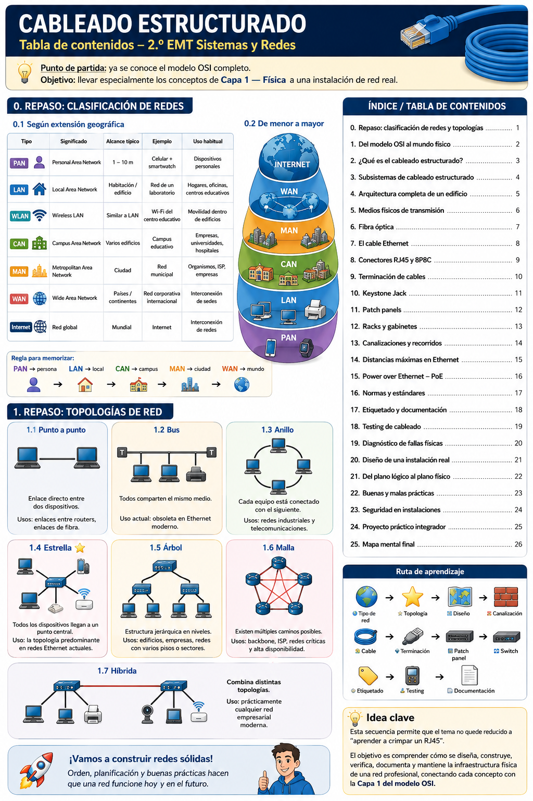
0.1 Clasificación según extensión geográfica
| Tipo | Significado | Alcance típico | Ejemplo | Uso habitual |
|---|---|---|---|---|
| PAN | Personal Area Network | 1–10 m | Celular + smartwatch | Dispositivos personales |
| LAN | Local Area Network | Habitación / edificio | Red de un laboratorio | Hogares, oficinas, centros educativos |
| WLAN | Wireless LAN | Similar a LAN | Wi-Fi del centro educativo | Movilidad dentro de edificios |
| CAN | Campus Area Network | Varios edificios | Campus educativo | Empresas, universidades, hospitales |
| MAN | Metropolitan Area Network | Ciudad | Red municipal | Organismos, ISP, empresas |
| WAN | Wide Area Network | Países / continentes | Red corporativa internacional | Interconexión de sedes |
| Internet | Red global | Mundial | Internet | Interconexión de redes |
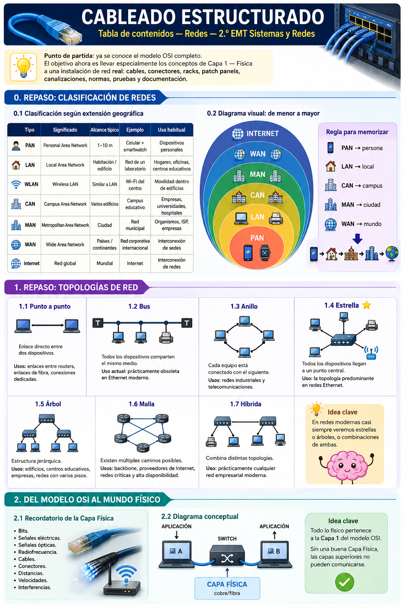
1. Repaso: topologías de red
La Capa 1 se ocupa de convertir bits en señales y transportarlos por un medio físico. Incluye:
3.1 Concepto
Sistema normalizado, modular y documentado de cables, conectores, canalizaciones, distribuidores y espacios de telecomunicaciones, para que la infraestructura sirva con distintos fabricantes y aplicaciones sin recablear cada vez que cambia un equipo.
3.2 Objetivos
3.3 Improvisado vs. estructurado
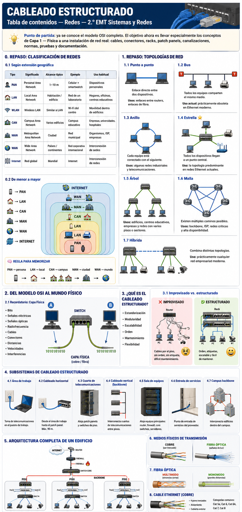
4. Subsistemas de cableado estructurado
Una arquitectura típica sigue el siguiente flujo:
Cada componente debe ubicarse dentro de una estructura física planificada.
6.1 Cobre balanceado de cuatro pares
Uso: PCs, impresoras, AP, cámaras IP, teléfonos IP y dispositivos PoE. Distancia típica: hasta 100 m de canal.
6.2 ¿Por qué trenzados?
El trenzado reduce el ruido electromagnético y la diafonía entre pares. Destrenzar demasiado al terminar puede sacar al enlace de su categoría.
6.3 Categorías
| Categoría | Aplicación habitual | Distancia orientativa |
|---|---|---|
| Cat 5e | 1 GbE | hasta 100 m |
| Cat 6 | 1 GbE; 10 GbE en recorridos reducidos | 1GbE 100 m; 10GBASE-T ~55 m |
| Cat 6A | 10 GbE | hasta 100 m |
| Cat 8 | 25/40 GbE en centros de datos | canal hasta 30 m |
7. Fibra óptica
Transporta información mediante pulsos luminosos por un núcleo de vidrio. Ideal para backbone, alta velocidad, grandes distancias y ambientes con interferencia eléctrica.
7.4 Conectores: LC — compactoSC — mayor tamaño · el polvo o suciedad microscópica puede aumentar considerablemente la pérdida óptica.
7.5 Transceptores: SFP, SFP+, QSFP — deben corresponder a velocidad, longitud de onda, fibra y distancia del enlace; no todos son intercambiables.
8. Anatomía del cable Ethernet
Los cuatro pares: NaranjaVerdeAzulMarrón
8.3–8.6 Conductores, AWG, curvatura y tensión
Sólido → cableado horizontal permanente. Multifilar → patch cords, más flexible. AWG menor = conductor más grueso. El cable no debe doblarse bruscamente ni tirarse con fuerza excesiva durante el tendido.
9. Conectores RJ45 (8P8C)
En redes se usa habitualmente "RJ45" para el conector modular 8P8C de Ethernet de cobre, con ocho posiciones y ocho contactos para terminar los cuatro pares.
10. Terminación de cables
Herramientas: crimpadora, pelacables, alicate, punch-down, tester.
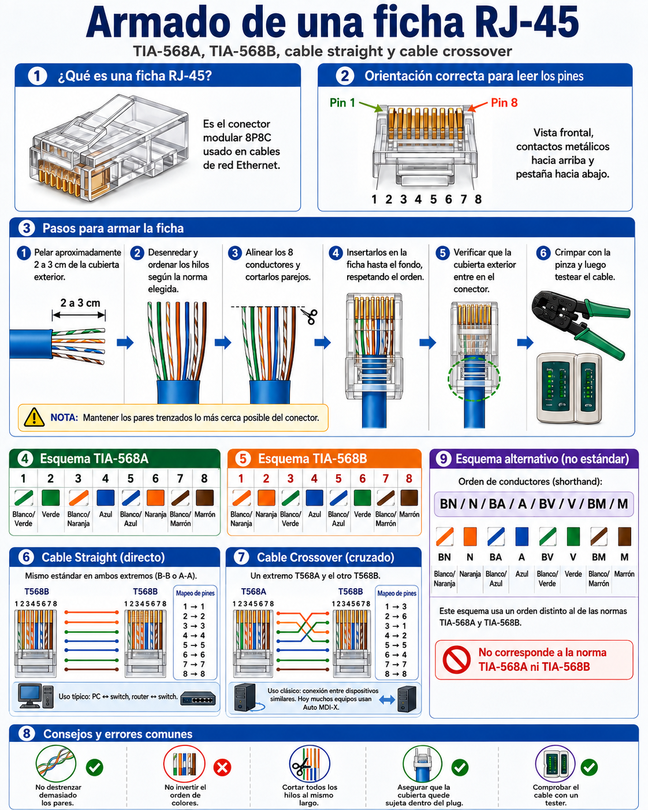
11. Keystone Jack
Módulo hembra usado en tomas, patch panels modulares y cajas, terminado mediante punch-down (inserción del conductor en contactos IDC) con una herramienta de impacto.
12. Patch panels
Terminan y organizan el cableado permanente en el rack, facilitando cambios sin manipular directamente el cableado horizontal. Cada puerto debe corresponder claramente con una toma del edificio, identificada de forma única (ej. TR1-PP01-24 → AULA203-D02).
13. Racks y gabinetes
El rack de 19" es el formato estándar para montar switches, patch panels, servidores, UPS y otros equipos. 1U = 1,75" / 44,45 mm de altura.
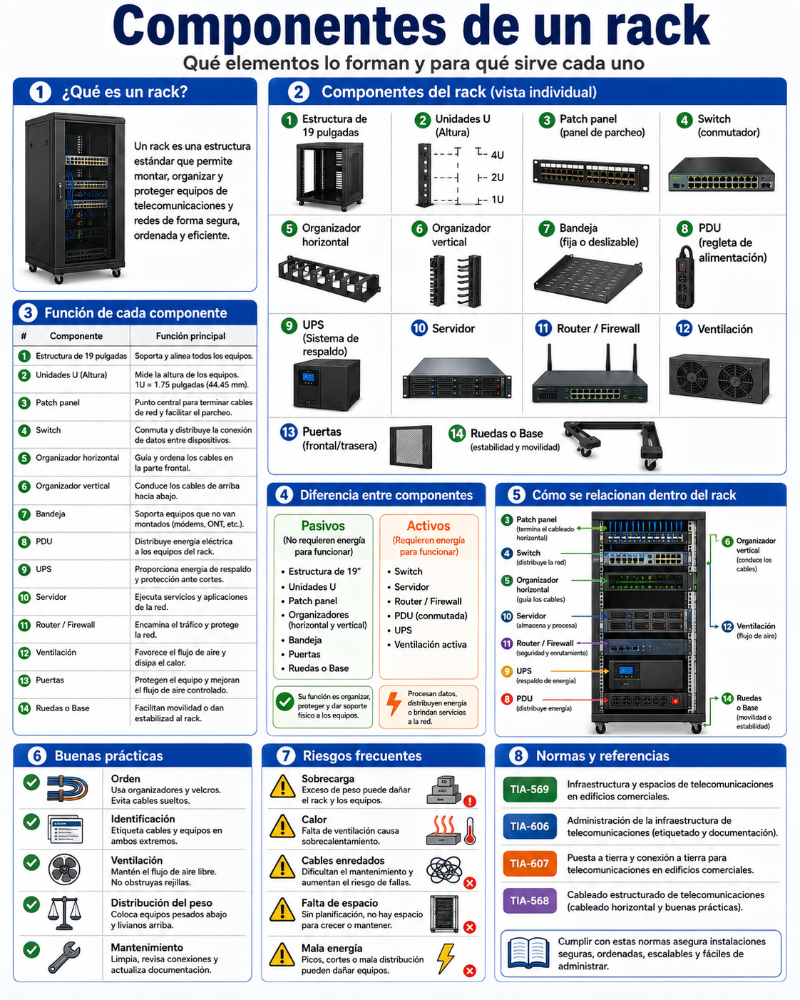
14. Canalizaciones y recorridos
15 y 27. Distancias máximas en Ethernet
| Situación | Distancia orientativa | Referencia |
|---|---|---|
| Permanent Link de cobre | 90 m máx. | TIA-568 / ISO 11801 |
| Channel de cobre | 100 m máx. | TIA-568 / ISO 11801 |
| Cat 5e — 1GBASE-T | 100 m | TIA-568 + IEEE 802.3 |
| Cat 6 — 10GBASE-T | hasta ~55 m | TIA-568 + IEEE 802.3 |
| Cat 6A — 10GBASE-T | 100 m | TIA-568 + IEEE 802.3 |
| Cat 8 — 25/40GBASE-T | 30 m de canal | TIA-568 + IEEE 802.3 |
| 10GBASE-SR sobre OM3 | aprox. 300 m | IEEE 802.3 |
| 10GBASE-SR sobre OM4 | aprox. 400 m | IEEE 802.3 |
| 10GBASE-LR monomodo | aprox. 10 km | IEEE 802.3 |
Aunque comparten el mismo gabinete de 19", un rack de comunicaciones (o de telecomunicaciones) y un rack de servidores se arman con criterios distintos porque alojan equipos de naturaleza diferente: el primero prioriza la organización del cableado horizontal, el segundo prioriza el cómputo, el almacenamiento y la redundancia eléctrica.
A. Rack de comunicaciones (cuarto de telecomunicaciones)
Es el rack típico de un cuarto de telecomunicaciones (TR): concentra la terminación del cableado horizontal proveniente de las tomas y lo conecta a los switches de acceso.
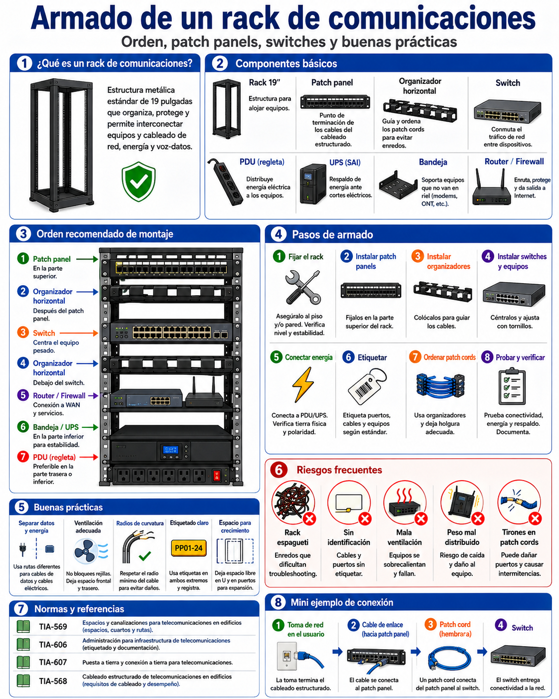
B. Rack de servidores (sala de equipos / data center)
Aloja equipos de cómputo y almacenamiento: su prioridad es el enfriamiento, la redundancia eléctrica y de red, y la facilidad de mantenimiento sin apagar servicios.
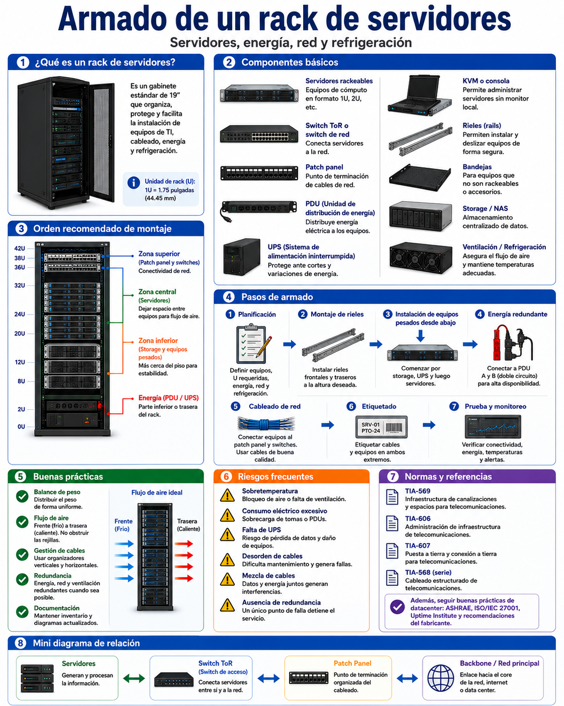
Comparación rápida
Canalizaciones: cómo se integra el recorrido completo
La canalización es el "esqueleto" físico que aloja todos los servicios de telecomunicaciones del edificio: datos, telefonía y telecontrol comparten los mismos caminos (bandejas, canaletas, caños, piso técnico o cielorraso), aunque cada servicio termine en su propio subsistema.
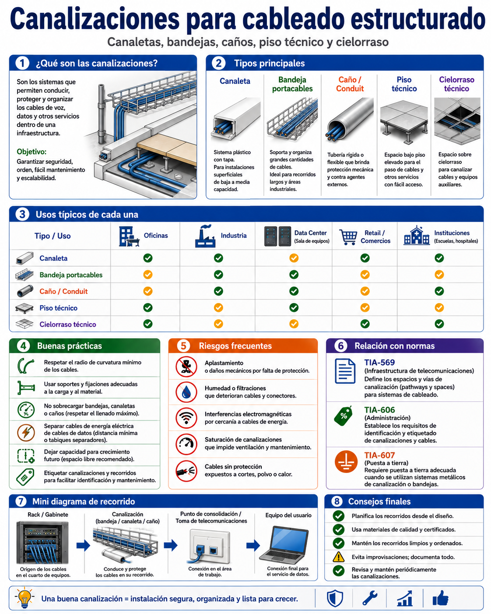
Telefonía tradicional (analógica/digital)
Distribuye líneas de una central telefónica (PBX) hacia extensiones fijas mediante pares de cobre, históricamente independientes del cableado de datos.
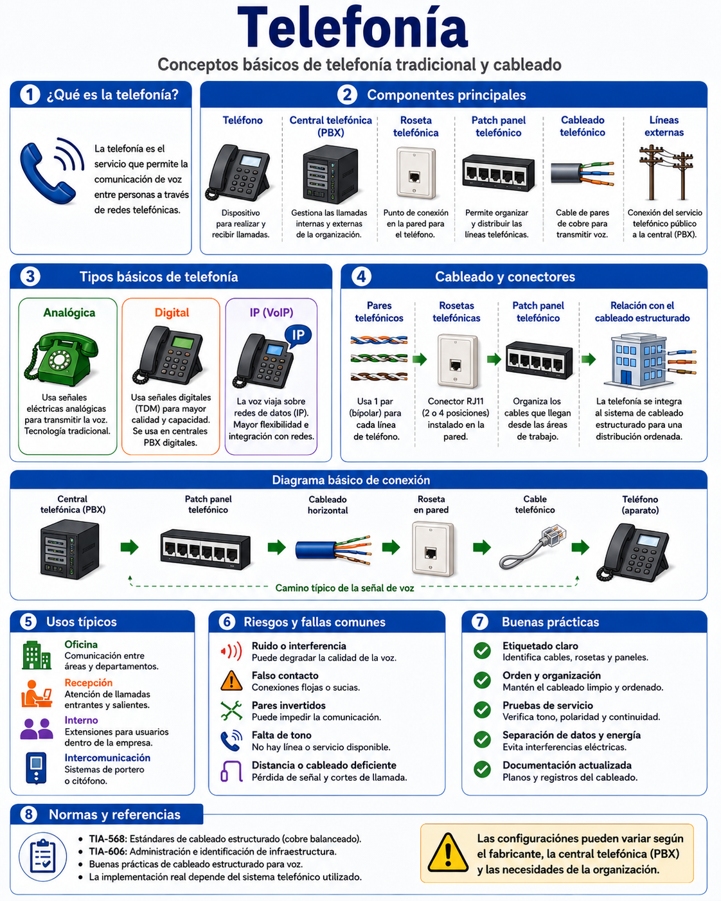
Telefonía IP
Convierte la voz en paquetes y la transporta sobre la misma red Ethernet que los datos, eliminando el cableado de voz independiente.
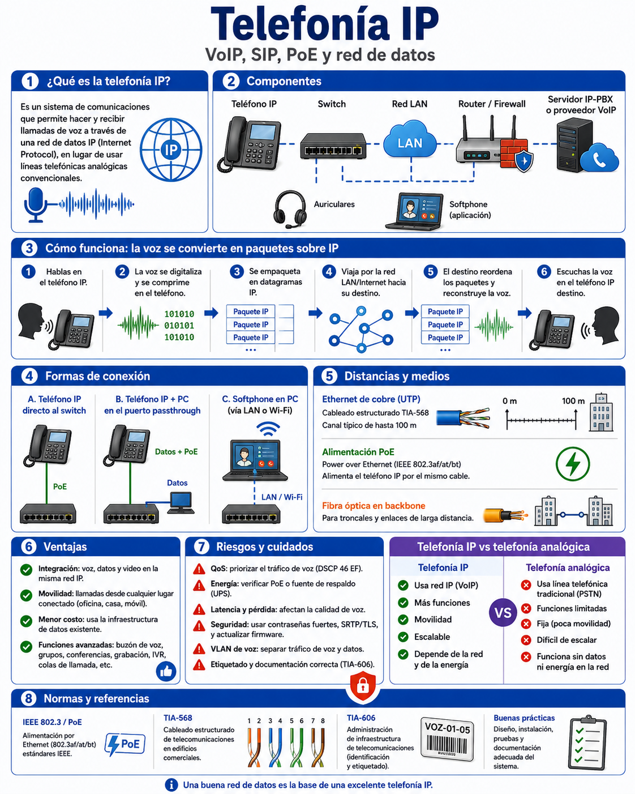
Telecontrol
Agrupa los sistemas de control, monitoreo y seguridad que corren sobre la misma red estructurada: videovigilancia (CCTV/IP), control de accesos, alarmas, sensores y automatización de edificios (BMS/domótica).
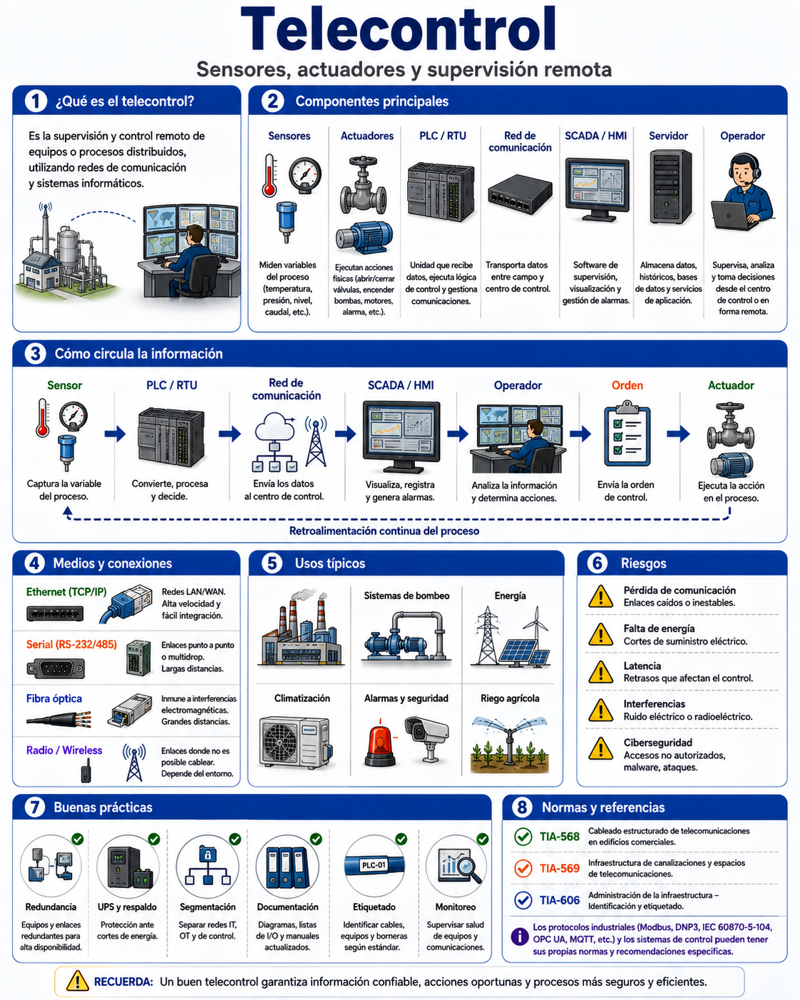
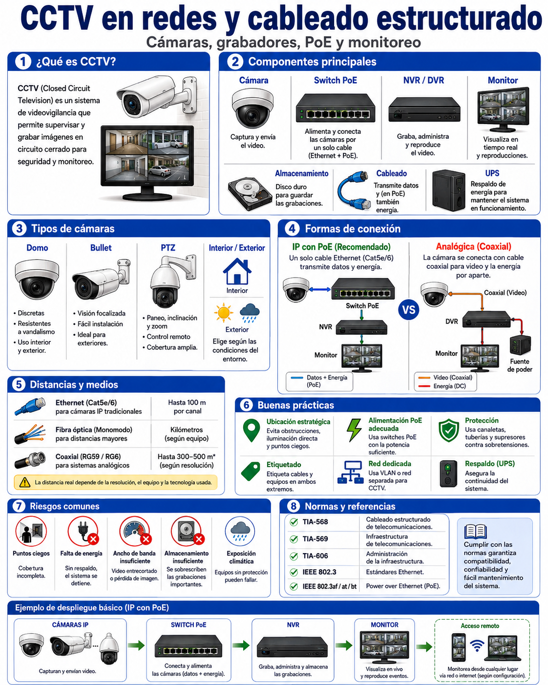
PoE transporta alimentación eléctrica y Ethernet por el mismo cableado balanceado, siguiendo normalmente el límite de canal de la aplicación Ethernet (frecuentemente 100 m).
Dispositivos típicos: access points, cámaras IP, teléfonos IP, sensores, IoT.
Idea clave: IEEE define qué necesita una aplicación Ethernet; TIA/ISO definen cómo debe ser la infraestructura capaz de soportarla.
18. Etiquetado y documentación (TIA-606-C)
Permite identificar rápidamente cada enlace sin seguir físicamente el cable. Debe poder identificarse: rack, patch panel, puerto, toma, sala, piso y cable. Ejemplo de convención: AULA03-D12 ↔ TR1-PP01-12
19. Testing de cableado
20. Diagnóstico de fallas físicas
El diagnóstico debe comenzar por Capa 1 antes de investigar IP, DNS o aplicaciones.
22. Del plano lógico al plano físico
24. Seguridad en instalaciones
Objetivo: diseñar e implementar una pequeña red estructurada completa.
- Interpretación de un plano
- Ubicación del rack
- Diseño de las canalizaciones
- Cálculo de cable necesario
- Selección de Cat 6/Cat 6A
- Instalación de keystones
- Terminación de patch panel
- Fabricación de patch cords
- Terminación T568A o T568B según criterio establecido
- Etiquetado
- Testing
- Documentación final
- Diagrama físico
- Diagrama lógico
- Diagnóstico de fallas introducidas deliberadamente
26. Mapa mental final
| Etapa | Norma principal |
|---|---|
| Diseño y cableado | ANSI/TIA-568 / ISO/IEC 11801 |
| Ethernet y PoE | IEEE 802.3 |
| Canalizaciones y espacios | TIA-569 |
| Etiquetado y documentación | TIA-606 |
| Bonding y grounding | TIA-607 |
| Pruebas y certificación | TIA-568 / ISO/IEC 11801 |